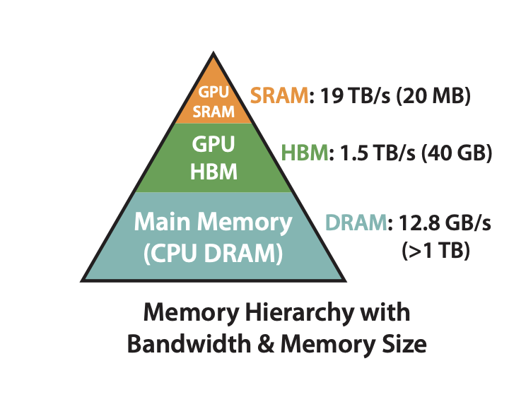
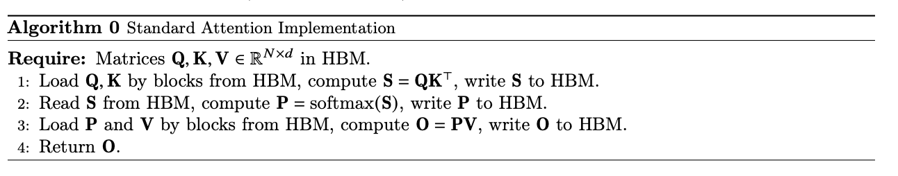
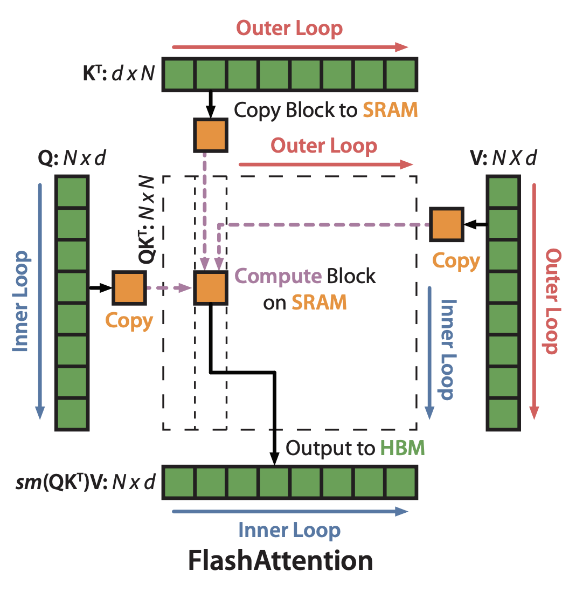
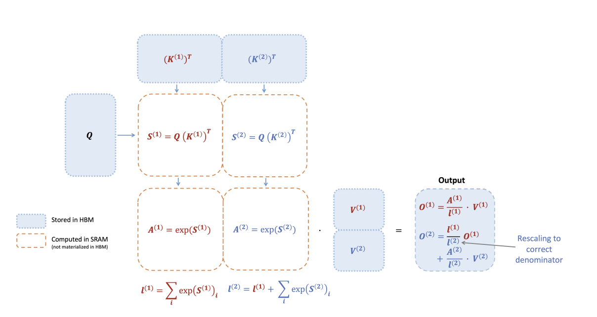
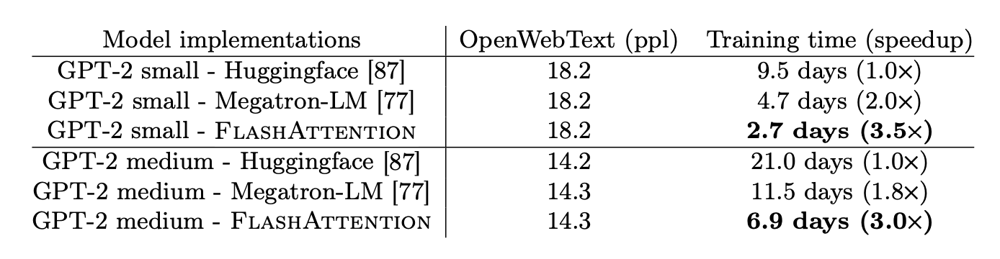
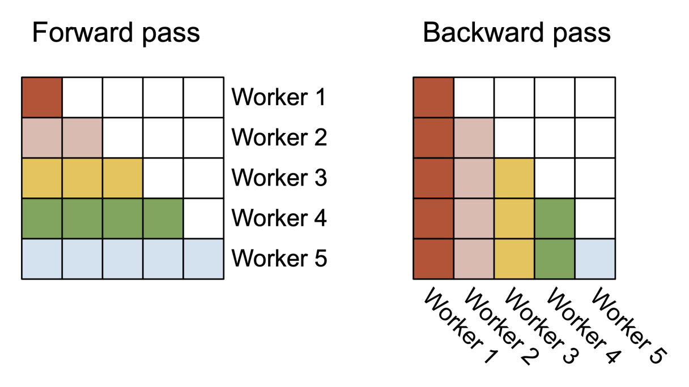
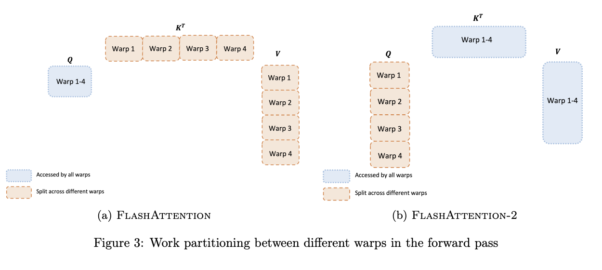
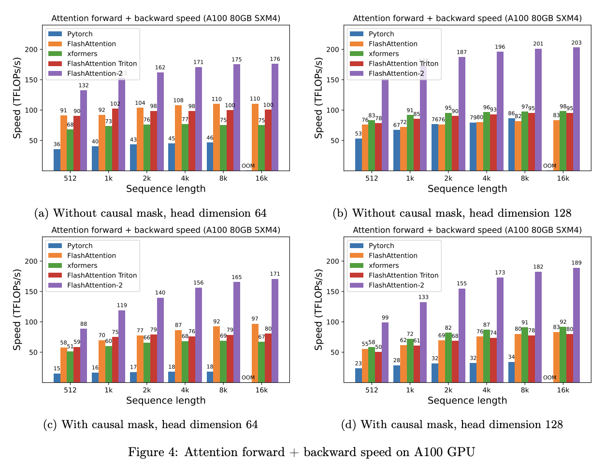

02.计算优化：Flash Attention演进#
Author by：桑青园
由于 Transformer 架构的核心模块——Attention 机制在计算时存在时空复杂度随序列长度呈二次方增长的问题，导致该结构在处理长序列时面临计算效率低下和显存占用较高的问题。为此，Flash Attention（以下简称 FA）提出通过分块计算（tilling）和算子融合（kernel fusion）的方式，不仅有效降低了显存占用，同时提升了训练速度和模型性能，接下来本文将详细介绍 FA 从 V1 到 V3 的演进及性能收益。
1.Attention 访存与算力瓶颈#
首先我们来简单回顾一下标准 Attention 的算法公式：
输入为 \(Q,K,V \in \mathbb{R}^{N \times d}\) , 其中 \(N\) 表示序列长度，\(d\) 表示注意力头的维度。虽然这个公式在数学表达上十分简洁，但在实际 GPU 训练过程中会引发显著的内存访问效率问题。这主要是由于标准 Attention 的计算过程中，内存访问模式与 GPU 存储架构之间存在冲突。
现代 GPU 采用分层存储体系，主要包含共享内存（SRAM）和全局内存（HBM）两级存储，不同存储的显存大小和访问带宽存在数量级差异。以 A100-40GB 为例，内存分级图如下所示：

HBM：global memory，即显存，访问速度相对较慢，但容量较大，通常用于存储模型参数和中间计算结果。共 40GB，带宽 1.5TB/s
SRAM：shared memory，GPU 的片上高速缓存，容量较小但访问速度极快，GPU 在进行计算时通常需要将数据从 HBM 拷贝到 SRAM 中。共 20MB，带宽 19TB/s
可以看到，HBM 的存储空间远大于 SRAM，同时访存带宽也远低于 SRAM 的带宽。因此，结合 GPU 内存分级存储架构，我们可以将标准 Attention 算法的实际执行过程抽象出如下流程：

计算注意力分数：首先从 HBM 中读取 \(Q,K\)，计算 \(S=QK^\top \in \mathbb{R}^{N \times N} \) 并将结果 \(S\) 写回 HBM，此时访存次数为 \(O(Nd+N^2)\)
计算注意力权重：从 HBM 中读取 \(S\),计算 \(P=softmax(S) \in \mathbb{R}^{N \times N} \) ，并将 \(P\) 写回 HBM, 访存次数为 \(O(N^2)\)
加权求和：从 HBM 中读取 \(P, V\), 计算 \(O=PV\) , 并将结果 \(O\) 写回 HBM, 访存次数为 \(O(Nd+N^2)\)
返回结果：返回 \(O\)
由此可见，在标准 Attention 的计算过程中，存在非常多对 HBM 的访问，同时，部分中间变量在计算完成写入 HBM 后又立刻被访问，如：\(S, P\)，这会带来两个问题：
访存瓶颈：HBM 带宽较低，频繁的 HBM 读写操作导致内存访问成为瓶颈，进而导致计算效率降低
显存 OOM：中间变量的存储消耗大量显存空间，\(S\) 的大小为 \(N \times N\)，显存占用随序列长度平方增长
针对中间变量 S 和 P 带来的问题，常规的优化方案是将 \(S=QK^\top \) 矩阵乘法、Softmax 归一化和 PV 乘积累加三个计算阶段融合为单一融合算子。但是，这个方案面临两个关键技术挑战：
为充分发挥 SRAM 的高带宽优势（19TB/s），必须采用分块计算策略，但 SRAM 的有限容量（20MB）导致长序列场景下无法完整存储注意力矩阵
标准 softmax 的全局归一化特性与分块计算模式存在本质冲突
FA 通过分块计算（tilling）和重计算（recompute）解决了这两个问题。
2. Flash Attention V1#
FA 的核心目标是尽量减少 HBM 中的频繁重复读写开销及中间结果的缓存，主要通过:
SoftMax Tiling : 将 Softmax 的计算分块（Tile）进行，以适应 SRAM 的容量限制
Recomputation : 在反向传播过程中，重新计算前向传播的部分结果，以减少存储需求
2.1 SoftMax Tiling#
我们先来看下 SoftMax Tiling， 在 Softmax 计算中，如果我们对 Q、K、V 进行分块（Block），在 SRAM 中完成相应块的计算，就可以减少存储 S、P 所需要的 HBM 的读写及显存占用。但是这种切分策略下，同一 sequence 可能会被分为多块，导致标准的 SoftMax 无法得到正确的结果。FA 通过分块 SoftMax 算法，确保了整个 Flash Attention 的正确性：

如图所示：我们将 Q 划分成 \(T_r\) 个 Bolck，K、V 划分成 \(T_c\) 个 Block，初始化 attention output O，并划分成 \(T_r\) 个 Block。FA 计算主要通过两层循环实现：
外层循环：对于每一个 Block Key 和 Value，从 HBM 加载进 SRAM
内层循环：对于每个 Block Query，从 HBM 加载进 SRAM
在 SRAM 上完成 Block S 和 P 的计算，更新得到 Block O，写入到 HBM 中，完成所有计算后返回完整 attention output O。
那么 FA 是如何通过分块 SoftMax 保证 SoftMax 计算的准确性呢？我们先来回忆一下标准 SoftMax 的计算公式，假设输入为向量 \(x \in \mathbb{R}^{B}\) ：
在实际的训练过程中，在做标准 softmax 函数计算的时候，我们经常会遇到数值稳定性的问题：在浮点数表示范围有限的情况下，softmax 公式在输入值较大时容易出现数值溢出：以 LLM 训练常用的 bfloat16 数据类型为例：当输入 x≥89 时，指数运算 \(e_x\) 的结果会超出 float32 最大可表示范围（约 \(3.4×10^38\)），导致结果变为 inf（无穷大）触发上溢。
为解决这个问题，"safe softmax" 通过一个简单而有效的变换实现数值稳定：
对输入向量中的每个元素减去该向量的最大值。具体来说，当输入向量为 \(x = [{x_1,x_2, ... x_K}]\)，令 \(c = max ({x_1,x_2, ... x_K})\)，则 safe softmax 的计算公式调整为：
这一变换的数学等价性在于当分子分母同时乘以 \(e^{-c}\)（一个正数），不会改变最终结果，但能将所有指数项的输入限制在≤0 的范围内（\( x_i - c ≤ 0 \)）。这时， \(e^{x_i - c}\) 的最大值为 \(e^{0} = 1\) ，最小值趋近于 0，避免了上溢风险。同时，由于分母是多个小于等于 1 的正数之和，也不会出现下溢导致的精度丢失问题。这种数值稳定策略已成为所有主流深度学习框架（如 PyTorch、TensorFlow、JAX 等）中 softmax 实现的标准方案。
我们可以将其表示为：
在 safe softmax 的基础上，FA 通过引入了 \( m(x), \ell(x)\) 两个中间量实现了 SoftMax 分块算法，假设有向量 \(x^{(1)}, x^{(2)} \in \mathbb{R}^{2B}\) ，拼接后的向量可以表示为 \(x = [x^{(1)}, x^{(2)} ]\in \mathbb{R}^{2B}\) ， softmax 计算可以分解为:
根据公式，可以将完整的 softmax 计算分为 4 步：
合并 “最大值”：我们通过中间变量 \( m(x)\) 维护最大值，完整向量 x 的最大值等于两个子块各自最大值的 “全局最大值”，通过不断更新 \( m(x)\) ，根据更新后的 \( m(x)\) 及上一步的计算结果 \( f(x^{(1)})\) 重新计算 \(f(x), \ell(x)\)，并不断迭代这个过程。假设存在 \(x^{(3)}\), 我们就可以将 \(x^{(1)}\) 和 \(x^{(2)}\) 合并成一个序列，重复这个步骤。因此，分块后我们只需跟踪每个块的最大值，再取全局最大，就能替代完整向量的最大值，避免存储整个长向量。
合并 “指数”：我们为什么需要给 \(f(x^{(k)}), k=(1,2)\) 加一个系数 \( e^{m(x^{(k)}) - m(x)}\) 呢，上文有提到， safe softmax 要求所有指数项都减去全局最大值，而子块 \(f(x^{(k)})\) 的指数项只减了自己的最大值 \(m(x^{(k)})\)，所以需要补一个 “差值因子”如下：
合并 “指数和统计量”：\(\ell(x)\) 是完整向量的 “指数和”, 即 safe softmax 的分母，等价于两个子块 “合并后的指数和” 之和: \(\ell(x) = \ell(x^{(1)}) + \ell(x^{(2)})\) , 两个子块的相加就是全局的 \(\ell(x)\) 。
完成 softmax 计算：既然 softmax 计算的分子和分母都能通过分块统计量合并得到，那么最终的 softmax 结果自然也和 “完整向量计算” 完全等价 —— 这就从数学上证明了 “分块计算 softmax” 的正确性。
我们再来看一下 FA 整体 Forward 的计算过程（为了便于理解省略了 dropout 和 mask）, 假设 K，V 只分成两个 Block， S 表示 attention score，P 表示 softmax 后的 attention score，softmax tiling 发生在 S --> P：

如图所示，通过 Softmax tiling 替换掉完整 safe softmax 计算后，Attention 计算的整体流程可以表示为：
其中，\(B_r\) 为 Q 的块大小，\(B_c\) 为 K，V 的分块大小，对于不同大小的数据，我们仅需迭代这个计算过程就可以得到完成的 Attnetion 结果。
最后再来看下 FA 的访存次数，前文有提到，标准 attention 计算的访存次数为 \(O(Nd+N^2)\)。对于 FA 计算：
由于 \(K,V \in \mathbb{R}^{N \times d}\) 的每个 block 都需要 Load 进 SRAM，因此该过程的 HBM 访问次数为 \(O(Nd)\)
Q 也需要分 block Load 进 SRAM，该过程一共持续外循环 \(T_c\) 次，因此该过程的 HBM 访问次数为 \(O(T_c Nd)\)
由于 \(T_c = \frac{N}{B_c} = \frac{4Nd}{M}\)， 因此 FA 的 HBM 实际访问次数为 \(O(\frac{N^2d^2}{M})\) 。在实际的模型结构中，通常 N >> d（例如 GPT2 中 N=1024，d=64），M(SRAM 大小)为 100K~20M，由此可见，相较于 Standard Attention 标准计算，FA 大大减少了 HBM 的访问次数，从而提升了训练和推理速度。
2.2 Recomputing#
在反向传播过程中，FA 最主要的优化就是 Recomputing。相比于标准计算，FA 在前向计算时并不会保留 S、P 矩阵，但是反向计算又依赖于 S、P 矩阵计算梯度，比较朴素的想法就是参考 FA forward，在 backward 过程中，利用 softmax tiling 将 Q、K、V 分块 load 到 SRAM 中重新计算 S、P 的值，再按照分块矩阵的方式分别计算梯度：
Forward 过程会保留 \(Q，K，V，O，\ell，m\) 在 HBM 中，\(dO\) 由反向计算得到后，按照 forward 的分块模式将其重新分为 \(T_r\) 块。
初始化 dQ，dK，dV 为全 0 矩阵，并按照对等 Q，K，V 的分割方式分割 dQ，dK，dV
分别从 HBM 中 Load K V block 到 SRAM，再 Load Q block on SRAM。根据前向过程重新计算对应 block 的 S 和 P；按分块矩阵的方式分别计算对应梯度
完成梯度更新
在这里需要注意的是，虽然 Recomputing 增加了计算量 FLOPs，但是由于 GPU 计算速度非常快，实际的瓶颈为访存速度，因此 IO 的减少带来的收益更大
2.3 性能分析与总结#
如图为论文FlashAttention: Fast and Memory-Efficient Exact Attention with IO-Awareness中提供的性能数据，使用 FA 训练 GPT-2 相比于 Huggingface 实现可以加速 3 倍,相比于 Megatron-LM 实现可以加速 1.7 倍：

总体来看，FA V1 通过 softmax tiling 及 kernel fusion 突破了显存限制，减少了计算及访存的开销，并通过 recomputaing 降低了反向传播的显存需求，从而显著提升了 Transformer 模型的训练和推理效率。
尽管 FA 取得了令人满意的效果，但由于其并未对不同的线程块（thread blocks）和线程束（wraps）进行最优分配，这导致了计算资源的低利用率以及不必要的共享内存读写操作，同时与其他基本操作（如矩阵乘法）相比，其效率仍有提升空间。
3. Flash Attention V2#
在 FA V1 算法的基础上，FA2 主要针对 FA V1 的工程实现进行优化，核心目标是最大化 GPU 矩阵计算单元（Tensor Core）的利用率，最小化冗余计算与内存通信，主要通过：
调整算法以减少非矩阵乘法的浮点运算次数，增加 Tensor Cores 计算的比例；
引入序列维度的并行，单注意力 Head 也可以通过跨不同线程块并行化注意力计算；
在每个线程块内部，通过在不同线程束之间分配任务，减少通过共享内存进行的通信开销
3.1 减少非矩阵乘计算#
GPU 内置矩阵乘法（Matmul）专用加速单元（Tensor Core），以 A100 为例，其计算性能与普通浮点计算存在量级差距：在 FP32 精度下，非矩阵乘法的普通浮点计算吞吐量仅为 19.5 TFLOPs/s；而在 FP16/BF16 精度（Transformer 模型常用精度）下，Tensor Core 的矩阵乘法最大理论吞吐量可达 312 TFLOPs/s，性能是普通浮点计算的 16 倍。因此，为了充分利用 GPU 的计算资源，我们需要尽可能减少非 Matmul 计算占比，提升整体计算效率。
FA V1 原方案在分块计算注意力时，存在冗余缩放操作：每处理一个分块都需要对中间输出进行实时缩放，以第 2 个分块为例，其计算公式为：
其中 \(O^{(1)}\) 为前一分块输出，\({\ell^{(j)}}\) 为分块的指数和，\(m^{(2)}\) 为分块的行最大值，\(S^{(2)}\) 为分块的注意力分数矩阵。
FA V2 通过两项核心调整消除冗余：
延迟缩放策略：更新 output 时不计算 \(diag\left(\ell^{(2)}\right)^{-1}\), 仅在所有分块处理完成后，一次性用最终的 \({\ell^{(last)}}\) 缩放得到最终结果，减少缩放次数。
精简存储变量：仅存储 Softmax 计算的对数求和（LogSumExp）\(L^{(j)} = m^{(j)} + \log\left(\ell^{(j)}\right)\)，而非同时存储行最大值 \(m^{(j)}\) 与指数和 \(\ell^{(j)}\)，以此减少内存占用。
调整后的分块计算公式为：
这种方式不仅减少前向传播的内存占用，也降低了反向传播时的依赖数据量。反向计算的核心需求是高效推导 (Q)、(K)、(V) 的梯度（(dQ)、(dK)、(dV)），FA V1 原方案需从存储的 \(m^{(j)}\) 和 \(\ell^{(j)}\) 重构中间变量，引入额外非 Matmul 计算，FA V2 直接复用前向存储的 LogSumExp：反向传播时，仅通过前向阶段保存的 \(L^{(j)}\) 而非 \(m^{(j)}\) 和 \(\ell^{(j)}\) 推导梯度，省去中间变量重构步骤，进一步减少非 Matmul 计算占比。
除此之外，FA V2 也在功能上进行了扩展，引入了 Causal mask 及多类型注意力：
Causal mask：在语言模型等时序场景中，因果掩码用于限制注意力流动 —— 确保模型预测第 (i) 个位置时，仅能依赖前 (i-1) 个位置的信息（即注意力矩阵 (S) 中，下三角区域有效，上三角区域需屏蔽）。FA V2 对注意力矩阵分块后，直接跳过 “列索引> 行索引” 的无效块（即上三角区域的分块），无需对这些块进行计算或掩码填充，使因果掩码场景下的计算速度，相较于 “无因果掩码的基础注意力计算” 提升 1.7-1.8 倍，同时避免无效计算带来的内存与算力浪费。
多类型注意力（Multi-query attention、Grouped-query attention）支持：FA V2 除支持传统 Multi-Head Attention（MHA）外，新增对 Multi-Query Attention（MQA） 和 Grouped-Query Attention（GQA） 的适配，满足不同场景下 “性能 - 效果 - 存储” 的权衡需求。
3.2 增加序列并行#
在 GPU 架构中，Threads（线程）、Warps（线程束）和 Thread Block（线程块）是实现高效并行计算的三层核心结构。在执行计算任务（Kernel）时，GPU 会启动大量 Threads，这些 Threads 先组成 Thread Block，Blocks 被调度到 GPU 的计算核心（SM，流多处理器）上运行。其中，Thread 是最小的计算单元，每个 Thread 执行相同 Kernel 代码处理不同数据，拥有独立寄存器存储局部数据；32 个 Threads 组成的 Warp 是最小的调度单元，同一 Warp 内 Thread 同步执行指令，可通过 Shuffle 指令实现纳秒级低延迟通信或合作执行矩阵乘法的计算；由多个 Warp 组成的 Thread Block 是可以独立调度到 SM 的任务单元，块内 Warp 可以通过共享内存（SRAM）通信。因此，Kernel 的实际计算流程可以理解为：从 HBM 中加载数据到共享内存，Thread 读取至寄存器并进行计算，通过 Shuffle/共享内存进行通信及同步，最后将结果汇总后写回 HBM。
考虑到 GPU 的三级并行计算结构，FA V1 依赖两个并行维度“批次（Batch）”和“注意力头（Heads）”分配 GPU 资源：不同样本/注意力头可分配给不同的线程块处理，线程块总数为 “批次大小 × 注意力头数”，当 batch_size 和 num_heads 较大时，线程块可充分利用 GPU 的流多处理器（SM），如 A100 有 108 个 SM，若线程块数≥108，可实现 SM 满负载。但在长序列场景下，由于内存限制需缩小批次和注意力头数，线程块的数量也同步降低，导致并行效率下降。因此 FA V2 引入序列长度维度的并行，结合 GPU 硬件架构（SM→线程块→线程束）的三层协同策略，让单个线程块内的线程束（warp）并行处理序列的不同位置，从而充分利用 GPU 的计算资源。序列维度并行方式如下：
低秩矩阵分解：首先将注意力矩阵分解成两个低秩矩阵，分别是 QK'和 V'，其中 QK'的形状是[batch_size, num_heads, seq_len, rank]， V'的形状是[batch_size, num_heads, rank, head_dims]
线程块分配：与 FA V1 一致，FA V2 将每个注意力头的计算分配给一个线程块，共有（batch_size * num_heads）个线程块，每个线程块在一个 SM 上运行，通过 SM 的分时复用让每个 SM 轮流处理多个线程块，避免 SM 空闲
线程束拆分计算：这是实现“序列维度的并行”的核心操作，在单个线程块内，按 “序列位置” 将计算任务平均分配给每个线程束（warp）。如果序列长度是 1024，线程束大小是 32，那么每个线程束处理 32 个序列位置
结果合并：由于各 warp 处理的序列位置相互独立，无需跨 warp 同步：每个 warp 计算完 32 个位置的输出后，直接写入线程块的共享内存；所有 warp 完成计算后，线程块将共享内存中的结果拼接，得到“one batch + one head”的完整序列输出；最终，所有线程块的输出汇总，得到整个 batch 的注意力计算结果。
需要注意的是，在实际的计算过程中，前向传播与反向的切分维度并不相同，如图所示：

这是由于在前向过程中，我们计算是对每个 Q，计算其与所有 KV 的交互，输出 O，且不同 Q 的计算完全独立，因此，按行切分可以使多个 Thread Block 同时处理不同行；而反向时的计算是基于前向的输出，回传计算 dQ（Q 的梯度）、dK（K 的梯度）、dV（V 的梯度），其中 不同 KV 的梯度计算完全独立，因此，按列切分后只需读取所有 Q 的梯度信息即可完成计算。如果反向也切分行块（按 Q 维度），计算 dK/dV 时需汇总所有 Q 对单个 KV 的梯度贡献，此时不仅 dQ 需要通信，dK 和 dV 也需要线程束间同步，频繁跨块通信同步大幅增加了延迟。
因此，FA V2 在前向传播中，使每个 Thread Blocks 负责处理注意力矩阵的一个行块；在反向传播中，使每个 Thread Blocks 负责处理注意力矩阵的一个列块，既保证每个线程块能独立完成任务（无依赖、无通信），也最大化利用了 GPU 多线程块的并行算力。
3.3 减少 Warp 间共享内存通信#
在 GPU 中，线程块内的线程按 warp（32 线程一组）调度，warp 间通过共享内存通信，而共享内存读写速度远低于寄存器，因此减少 warp 间通信是关键。
以下图为例，在 FA V1 中，外循环针对输入序列中的 K 和 V 进行遍历，而内循环则遍历输入序列中的 Q。每个线程块会将 K 和 V 分成 4 个 warp，并允许所有 warp 都能访问 Q。在这个过程中，每个线程束通过矩阵乘法得到 \({QK^T}\) 的一个子矩阵，随后需与 V 的一个子矩阵相乘，并通过线程束间通信汇总计算结果 \({O_i}\)。然而，每次内循环操作都会导致 \({O_i}\) 的更新。这就导致每个 warp 都需要频繁从 HBM 读取和写入 \({O_i}\)。这种方案涉及大量 HBM 的读写，效率较低。
而 FA V2 则采用了不同的策略。它将外循环移到了 Q 上，将内循环移到了 K 和 V 上，并将 Q 分成了 4 个 warp，允许所有 warp 都能访问 K 和 V。每个 warp 通过矩阵乘法得到 \({QK^T}\) 的一个子矩阵后，只需与共享的 V 子矩阵相乘，即可得到输出结果中对应的子矩阵，整个过程中，线程束之间无需通信。这种方式的好处在于 FA V2 中，每次内循环处理的都是存储在 SRAM 上的 \({O_i}\) 而不是从 HBM 中频繁读写，从而提高效率。

3.4 性能分析#
如FlashAttention-2:Faster Attention with Better Parallelism and Work Partitioning论文中所示，FA V2 相比于 FA V1 前向 + 反向传播速度提升约 2 倍，随序列长度逐渐增加，性能提升也更为明显。

Flash Attention V3#
新硬件 Hopper 架构带来的挑战#
性能分析#
!!!!!!!!! 新增 ## Flash Attention V4
总结与思考#
XXXXXXX
参考与引用#
XXXXXXX